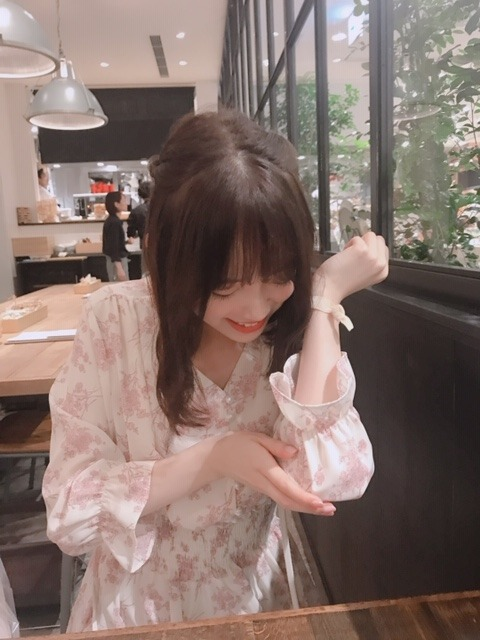

2019/0730Tue描きやすいペン

肘ぶつけて痛がってる私とそれを笑いながら写真をとる親友。
鬼や！
明日、私が第1話にゲスト出演させていただいたドラマ「遊戯みたいにいかない。」のBlu-ray&DVDが発売になります☺︎
メイキングなどもありますので是非！
私もお家で早速観ます☺︎ 楽しい撮影だったな〜
あ、
ホットギミック ガールミーツボーイの上映がのびました！！本当に、ありがとうございます。
メンバーやスタッフさん、友達からも毎日映画の感想をいただけていて、幸せです。
最近だと、新海誠監督「天気の子」を観に行ったのですが明るいだけではない青春映画って今年の夏のテーマなのかもと勝手に親近感を感じて観ていました。
すてきだったな〜
笑われるくらいの愛ならいらない...ですよね...
めちゃよかったです 陽菜ちゃんも芯のある感じが良くてほだかくんのまっすぐさにもギュンギュンしました
ほだかくんシンプルにお顔がタイプでした
みんなが傷を負って隠して曝け出して生きてるんだって
ホットギミックも"陽＂というよりは"陰"に着目された映画で、まっすぐな愛や人の心の傷、いろんなことを感じていただけると思います。
いま、この時代だからこそ、色んな方に観てほしいです
よろしくです
では！
2019/07/30 19:30
コメント(255)
ブログ更新ありがとう！！
自分は明日部活がオフなのでホックギミック見に行きます！
ようやく行けるということで興奮している状態ですw
これからもブログを楽しみにしてます！！
自分は明日部活がオフなのでホックギミック見に行きます！
ようやく行けるということで興奮している状態ですw
これからもブログを楽しみにしてます！！
ブログ更新ありがとう
今の髪型とても似合ってますよ＼(^-^)／
熱中症に気をつけてね
今の髪型とても似合ってますよ＼(^-^)／
熱中症に気をつけてね
腕が痺れるやつだね（笑）
オフを満喫してますな( ・∇・)
天気の子観に行きたくなるな〜
そこから自然な流れでホットギミックの宣伝に移る未央奈ちゃんはプロですね （笑）
（笑）
オフを満喫してますな( ・∇・)
天気の子観に行きたくなるな〜
そこから自然な流れでホットギミックの宣伝に移る未央奈ちゃんはプロですね
未央奈ブログ更新ありがとう！
いい、親友やねぇーーー
ホットギミックまた、みたいーーー
もう一回観にいこうかなー！
もう、5回観てる
ペット2もみたいー。バナナマンさんの声いいー
では
ようちゃんマン
いい、親友やねぇーーー
ホットギミックまた、みたいーーー
もう一回観にいこうかなー！
もう、5回観てる
ペット2もみたいー。バナナマンさんの声いいー
では
ようちゃんマン
未央奈ブログ更新ありがとう
毎日癒やされてます
毎日癒やされてます
お疲れ様です!
映画とても良かったです！！ 肘大丈夫ですか？ 心配です(*´◒`*) ライブ行けたら行きます！応援してます！ 大好きです！
ホットギミック大阪でも上映して〜
堀さん、こんばんは。
肘ぶつけるときって、ちょっと打ちどころが悪かったりすると指先までじんじん痺れたりすることって無いですか？ わー筋というか神経ってちゃんと繋がってるんだと、妙なところで感心したり。
肘ぶつけちゃった堀さんの表情がほんとに痛そう（笑）……あ、僕も笑ってしまいました。鬼反省です（ふふ）。
観たいと思っていたのになかなか予定が合わずにいて、やっと時間がとれた！ というときにまだ上映していてくれると嬉しい映画作品ってありますよね。
『ホットギミック』も、そういう幸せな気持ちをたくさん生み出してくれる上映延長であると嬉しいな。
ではまたコメント寄せます。おやすみなさい。
さらばだ、また会おう！（気球に乗って去りぬ〜）
肘ぶつけるときって、ちょっと打ちどころが悪かったりすると指先までじんじん痺れたりすることって無いですか？ わー筋というか神経ってちゃんと繋がってるんだと、妙なところで感心したり。
肘ぶつけちゃった堀さんの表情がほんとに痛そう（笑）……あ、僕も笑ってしまいました。鬼反省です（ふふ）。
観たいと思っていたのになかなか予定が合わずにいて、やっと時間がとれた！ というときにまだ上映していてくれると嬉しい映画作品ってありますよね。
『ホットギミック』も、そういう幸せな気持ちをたくさん生み出してくれる上映延長であると嬉しいな。
ではまたコメント寄せます。おやすみなさい。
さらばだ、また会おう！（気球に乗って去りぬ〜）
1、2枚目のみおなさん自然体でかわいすぎ！笑
ホットギミック上映伸びたのね！まだみてない友達き人に勧めとく！
天気の子はまだ見れてないから、一緒にいってください笑
またねーー
ホットギミック上映伸びたのね！まだみてない友達き人に勧めとく！
天気の子はまだ見れてないから、一緒にいってください笑
またねーー
未央奈ちゃんおつかれです。
堀さん、こんばんは。
肘痛の時まで可愛くてありがとうございます。ぶつけて大変でしたね。今後絶対にケガを避けたいときは、肘当て膝当てヘルメットをしてバブルサッカーのをかぶってゾーブの球に入って転がって移動すればいいと思います。
天気の子よかったですよね。暗さ以外にも、風景が重要だったり常に映像が美しい所とかも共通点かもしれないですね。僕としては「おとぎ話みたい」と「言の葉の庭」の間にも共通点が多いと思ってます。
他人のための犠牲になんてならなくていいので、人を元気にできる可愛い写真が撮れるからって、堀さんがこれから肘ぶつけ続ける必要なんてないですからね。
僕は堀さんの顔がタイプなので、堀さんの出てるホットギミックも堀さんのタイプの帆高の出てる天気の子も、また見直そうと思います。
未央奈～☆☆
肘痛いよね。大丈夫？
臨場感がありすぎて、俺の肘もジーンとしてきた。笑
肘痛いよね。大丈夫？
臨場感がありすぎて、俺の肘もジーンとしてきた。笑
ホーリーホラーズ怖かったです〜｡(´Д｀ﾟ)
あのカメラアングルはズルいです〜(ﾉД`)
おやすみおなです〜(´Д⊂)
あのカメラアングルはズルいです〜(ﾉД`)
おやすみおなです〜(´Д⊂)
応援してるよぉ〜
未央奈、ブログ更新ありがとうございます
最近更新回数多くて楽しみです
肘打ちは痛かったですね プロレス技にエルボーがありますが、打ち所が悪かったら同じ様に痺れるのかな？と思ってしまいました
暑さも本格的になっていますね 昨日は梅干しの日でしたね クエン酸が疲労回復になるので、美味しいのを1日1個食べて熱中症予防に繋げましょう
ご自愛くださいね
最近更新回数多くて楽しみです
肘打ちは痛かったですね プロレス技にエルボーがありますが、打ち所が悪かったら同じ様に痺れるのかな？と思ってしまいました
暑さも本格的になっていますね 昨日は梅干しの日でしたね クエン酸が疲労回復になるので、美味しいのを1日1個食べて熱中症予防に繋げましょう
ご自愛くださいね
更新有難う！
御疲れ様でした！
とても可愛いです。
何時も頑張って下さい、
常に必ずしても応援しています。
どうか御身体に気を付けて下さい！
ずっと大好き！

御疲れ様でした！
とても可愛いです。
何時も頑張って下さい、
常に必ずしても応援しています。
どうか御身体に気を付けて下さい！
ずっと大好き！
ホットギミック 2回目またみに行こうかなぁ…
ほんとにみおなちゃんかわいい！
ほんとにみおなちゃんかわいい！
未央奈ぁ～～～～～～～。
暑い～～。燃える～～。朝早い時間でこの、湿気。全然、眠れないッス。
未央奈も、エアコンかけすぎに注意ね。なんかインフルエンザが流行ってるらしい。
じゃぁ
暑い～～。燃える～～。朝早い時間でこの、湿気。全然、眠れないッス。
未央奈も、エアコンかけすぎに注意ね。なんかインフルエンザが流行ってるらしい。
じゃぁ
未央奈ちゃんブログ更新ありがとう！
肘ぶつけて痛がってる写真
めっちゃ可愛い笑
親友さんありがとう( ⸝⸝⸝¯ ¯⸝⸝⸝ )
ホットギミックの上映期間のびたね！
7回しか観れてなかったんだけど、
またみにいったよ〜(⁎˃ᴗ˂⁎)
大きいスクリーンに映し出される
女優の未央奈ちゃんには毎回毎回
ひきこまれる。
最後の広場で言い合うシーンは
ほんとに好きだな〜♡
肘ぶつけて痛がってる写真
めっちゃ可愛い笑
親友さんありがとう( ⸝⸝⸝¯ ¯⸝⸝⸝ )
ホットギミックの上映期間のびたね！
7回しか観れてなかったんだけど、
またみにいったよ〜(⁎˃ᴗ˂⁎)
大きいスクリーンに映し出される
女優の未央奈ちゃんには毎回毎回
ひきこまれる。
最後の広場で言い合うシーンは
ほんとに好きだな〜♡
おはみおにゃ♪ヽ(´▽｀)/ 鬼嫁は聞くけど、鬼友？(゜ロ゜)って言うか？(笑)
未央奈、いつもありがとう！ほんまにホットギミックはいい作品だ！何回も見たいと思っとる！
天気の子は8月に友だちと見に行くよ！それも、楽しみ！
未央奈の演技好きだから、朝ドラとかに出て欲しいな！
これからもずっと応援する！頑張れ！
天気の子は8月に友だちと見に行くよ！それも、楽しみ！
未央奈の演技好きだから、朝ドラとかに出て欲しいな！
これからもずっと応援する！頑張れ！
可愛い❤
握手会今度いけたら行きたいな〜
握手会今度いけたら行きたいな〜
堀ちゃん
おはようございます
肘をぶつけると、電撃が流れたみたいに痺れるような痛みが走りますよね
写真は痛いはずなのに笑ってるから可愛いですね笑
天気の子は気になってて観たいけどまだ観れてないです
予告からすると君の名はみたいに壮大なスケールの話だと思ってますけど、早く観たいです（とりあえずローソンでコラボしてる、からあげクンと晴れソーダアイスは食べた笑）
ホットギミックはもう一度、観に行きたいです
少なくともBlu-rayが発売されたら買いますね
仕事へ行きます
堀ちゃんも頑張ってね！
ありがとうございました
おはようございます
肘をぶつけると、電撃が流れたみたいに痺れるような痛みが走りますよね
写真は痛いはずなのに笑ってるから可愛いですね笑
天気の子は気になってて観たいけどまだ観れてないです
予告からすると君の名はみたいに壮大なスケールの話だと思ってますけど、早く観たいです（とりあえずローソンでコラボしてる、からあげクンと晴れソーダアイスは食べた笑）
ホットギミックはもう一度、観に行きたいです
少なくともBlu-rayが発売されたら買いますね
仕事へ行きます
堀ちゃんも頑張ってね！
ありがとうございました
未央奈ちゃん更新ありがとー！
肘と足の小指はぶつけると痛いよねー。
痛がってても可愛いから写真撮るのもわかる気がする！
(私も鬼かも 笑)
ホットギミック上映延びてよかったね！！
自分ももう一回ぐらい観に行こー！
ではでは、
今日も素敵な１日を。
肘と足の小指はぶつけると痛いよねー。
痛がってても可愛いから写真撮るのもわかる気がする！
(私も鬼かも 笑)
ホットギミック上映延びてよかったね！！
自分ももう一回ぐらい観に行こー！
ではでは、
今日も素敵な１日を。
みおな好き 可愛い〜
可愛い〜
天気の子いいですよね！
この夏はまだホットギミックと天気の子しかみてなくて笑
ほかにもみたいのあるんですけど
未央奈は次はなにをみますか？
この夏はまだホットギミックと天気の子しかみてなくて笑
ほかにもみたいのあるんですけど
未央奈は次はなにをみますか？
ほりっぴ～、ナンチです♪
ブログ更新ありがとう～
言ってはいけないかもしれんけど、毎日暑いね
海に行きたい～
秋になったら湘南に来てね
今はめっちゃ暑いから外出は控えないとね
熱中症には気をつけて
ブログ更新ありがとう～
言ってはいけないかもしれんけど、毎日暑いね
海に行きたい～
秋になったら湘南に来てね
今はめっちゃ暑いから外出は控えないとね
熱中症には気をつけて
肘の内側をぶつけてビリッとなったことはありますか？
あれって痛いんですよね～。
酷いときは暫く腕の感覚無くなります。
(>_< )( >_<)
あれって痛いんですよね～。
酷いときは暫く腕の感覚無くなります。
(>_< )( >_<)
可愛すぎ〜!
お疲れ様～
ホットギミックの上映期間が延びて良かったね！
これでもっと未央奈ちゃんの魅力をいろんな人に知ってもらえるね♪
ホント透明感半端ないし、可愛すぎ！
不意に肘ぶつけると地味に痛いよね(>_<)
ホットギミックの上映期間が延びて良かったね！
これでもっと未央奈ちゃんの魅力をいろんな人に知ってもらえるね♪
ホント透明感半端ないし、可愛すぎ！
不意に肘ぶつけると地味に痛いよね(>_<)
すき！！！！
更新ありがとうございます。
暑いね
身体に気をつけてね。
無理せずに。


身体に気をつけてね。
無理せずに。
今日も一日お疲れさまでした。
未央奈が肘をぶつけたところにカメラを向ける、未央奈の親友はさすがですね。可愛い写真が2枚撮れてるし…笑
「遊戯みたいにいかない」DVDがもう出るんですね。時の流れが早く感じます。未央奈のクールで論理的な話し方をするキャラは合ってるなって思いましたよ。
「ホットギミック ガールミーツボーイ」の公開も続くようで。とても嬉しいです。
未央奈の演技も素晴らしいし、初が成長していく姿に心動かされることはたくさんある。たくさんの良さが詰まったこの作品を、またスクリーンの前で観たいなと思います。
それと、何事も表裏一体。
陰があれば陽もある。きっとそれを逆転することはできると思うし、意思ではなく、行動で変えることはできると思います。
全然話しは変わっちゃうんですけど。
7/28の握手会、未央奈のメイクがいつもと違うって言えなかったなと思って…。3部の時に気づいたんだけど、その時は髪型のこと話して。「次の部で話そう」って思ったんだけど、マスクしてたから改めて確認できなくて話せなくて…
チークがいつもよりピンク色が出ていたというか。
全体的なメイクも好きだったんだけど、特にそれが強調されていて、とても可愛かったです。。
今度はちゃんと話せるように、すぐ気づけるようにしますm(_ _)m
じゃあ、最後に。
外は暑くて、室内は寒い。
なんてことが続く季節なので、寒暖の差には気をつけてください…。お仕事やライブ。バタバタする毎日だと思うけど、休息はしっかりと取ってくださいね。
ではでは、ねこでした。
肘大丈夫？親友も親友で鬼だな笑
未央奈ちゃん、おはよう。
ブログ更新、癒されます。ありがとう。
肘をさすってる姿がカワイイです‼
ホットギミック公開がロングランになるといいね。時間を作って、また行きます。
乃木坂46と頑張ってるcuteでsmartな未央奈ちゃんを応援しています。
ブログ更新、癒されます。ありがとう。
肘をさすってる姿がカワイイです‼
ホットギミック公開がロングランになるといいね。時間を作って、また行きます。
乃木坂46と頑張ってるcuteでsmartな未央奈ちゃんを応援しています。
未央奈ちゃんおはようございます‼ありがとうございます！今年も楽しみにしてます‼お疲れ様です。気をつけて下さい！ありがとうございます！
おはようございます
未央奈ちゃんが肘ぶつけて痛そう、かわいそうです。
でもそんな瞬間を写真にとってみるのも、未央奈ちゃんだから絵になりますね～。
ホットギミックが延長上映された事、何よりです。
実は先日映画館に行けるチャンスがあったのですが、乃木坂46のドキュメント映画の方を見ました～。
ゴゴゴゴ、ゴメンナサイ
暑さに負けない様、お過ごし下さい。
それではまた。
未央奈ちゃんが肘ぶつけて痛そう、かわいそうです。
でもそんな瞬間を写真にとってみるのも、未央奈ちゃんだから絵になりますね～。
ホットギミックが延長上映された事、何よりです。
実は先日映画館に行けるチャンスがあったのですが、乃木坂46のドキュメント映画の方を見ました～。
ゴゴゴゴ、ゴメンナサイ
暑さに負けない様、お過ごし下さい。
それではまた。
僕も先週「天気の子」観ました～
なぎくんの小学生だと思えないほどの恋愛マスターは凄すぎました
かなり良い作品だなと思いました
なぎくんの小学生だと思えないほどの恋愛マスターは凄すぎました
かなり良い作品だなと思いました
写真かわい！
暑いから無理せずにね
寝るなら日陰でラジオでも聴きながら
寝るなら日陰でラジオでも聴きながら
そんなガーリーなワンピースも着るんや？
かわいい！
かわいい！
未央奈頑張ってー
応援してるー
応援してるー
未央奈～～～～～。
ひじが、「ゴンっ」て、当たったんだよね。ビリビリビリビリって痺れがきたでしょう。
あれっ、気持ちいいって人もいるけど、私は苦手。ビリビリ。
では。
ひじが、「ゴンっ」て、当たったんだよね。ビリビリビリビリって痺れがきたでしょう。
あれっ、気持ちいいって人もいるけど、私は苦手。ビリビリ。
では。
こんにちは♪
表情が絶妙(笑)
ホットギミック延長おめでとう！
より多くの人に観てもらえると良いね。
天気の子まだ観れてないなぁ、
晴れだけじゃないお話なのかな、
何回か言ったかもだけど、新海さんの作品好きだから、時間作って観に行きたいな。。
表情が絶妙(笑)
ホットギミック延長おめでとう！
より多くの人に観てもらえると良いね。
天気の子まだ観れてないなぁ、
晴れだけじゃないお話なのかな、
何回か言ったかもだけど、新海さんの作品好きだから、時間作って観に行きたいな。。
堀ちゃん、かわいい〜
未央奈の、ちょっとドジッた部分もかわいいです。
未央奈の凛としたところが、大好きなんだけど、やっぱり、芯がしっかりしているからかな。キリっとした、表情も大好き。
未央奈の凛としたところが、大好きなんだけど、やっぱり、芯がしっかりしているからかな。キリっとした、表情も大好き。
未央奈！
肘ぶつけたのか笑
痛そうっじゃなくて、なぜか楽しそうって思ったのは俺だけかな？笑
天気の子、観たんだね！
愛にできることは何なんだろうって歌詞通りに思えた作品でした。
でもね、気象好きの俺は作品で笑えたり、深く考えさせられる部分もあって。
気象監修の荒木健太郎さんが作品内で出てきた時はニヤニヤしてたかな笑
それとか、完全なる気候の変化は、現実世界で起きてしまうと必ず人的被害が出てしまいます…
天気の子、愛と気象と気候と、めちゃくちゃ考えさせられる作品だったな、俺には。
グランドエスケープを聞いたときは全身がゾクゾクしたのを覚えてる！
肘ぶつけたのか笑
痛そうっじゃなくて、なぜか楽しそうって思ったのは俺だけかな？笑
天気の子、観たんだね！
愛にできることは何なんだろうって歌詞通りに思えた作品でした。
でもね、気象好きの俺は作品で笑えたり、深く考えさせられる部分もあって。
気象監修の荒木健太郎さんが作品内で出てきた時はニヤニヤしてたかな笑
それとか、完全なる気候の変化は、現実世界で起きてしまうと必ず人的被害が出てしまいます…
天気の子、愛と気象と気候と、めちゃくちゃ考えさせられる作品だったな、俺には。
グランドエスケープを聞いたときは全身がゾクゾクしたのを覚えてる！


只の味方！